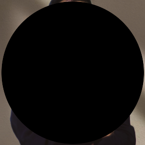

Profesional IT dengan pengalaman 4+ tahun dalam infrastruktur jaringan, administrasi sistem, dan operasional IT.
Memiliki fondasi kuat di bidang hardware (krimping RJ45, terminasi fiber optik, deployment OLT) dan software
(administrasi Linux/Windows, Bash scripting, troubleshooting sistem). Linux (Pop OS, Xubuntu) sebagai daily driver;
mengenal Windows sejak SD. Berpengalaman dalam arsitektur sistem untuk aplikasi serverless production — termasuk
pemodelan database, strategi caching, dan kontrol akses berbasis peran.
Etos kerja: Kerjakan semua yang bisa dikerjakan hari itu sampai selesai, pekerjaan adalah utama.
MikroTik RouterOS, PPPoE Server, VLAN, OLT/ONT, FTTH, Fiber Optic Termination, RJ45 Crimping, Routing & NAT, Firewall, Bandwidth Management, Monitoring Jaringan
Cloudflare Workers, Supabase (PostgreSQL, RLS, Auth), AWS (EC2, S3, VPC, IAM), Docker, Terraform, GitHub Actions, CI/CD
Arsitektur Serverless, Strategi Caching Edge, Pemodelan Database, Desain RBAC, Arsitektur Keamanan
Linux (Pop OS, Xubuntu — daily driver), Windows (sejak SD)
Platform pencarian beasiswa, kompetisi, dan event untuk pelajar Indonesia. (Dikembangkan dengan bantuan AI — saya memegang penuh system design dan arsitektur.)
Mencakup: content management system, halaman publik dengan SEO/PWA, admin dashboard dengan CRUD + analytics.
Kurikulum hands-on terstruktur — 70 proyek cloud engineering dibangun dari nol, didokumentasikan dengan diagram arsitektur, dan dipublikasikan di GitHub.